Oceânica · Fase 01 · Hero
Três direções radicalmente diferentes, cada uma com um sujeito, um movimento de câmera e uma ideia. Os quadros são composições estáticas feitas com as fotos reais, para julgar a direção de arte. Não são a implementação, e nenhum crédito foi gasto. O detalhamento dos 10 itens de cada conceito está em HERO-CONCEPTS.md.
Conceito 01
EN · Breathe deep.
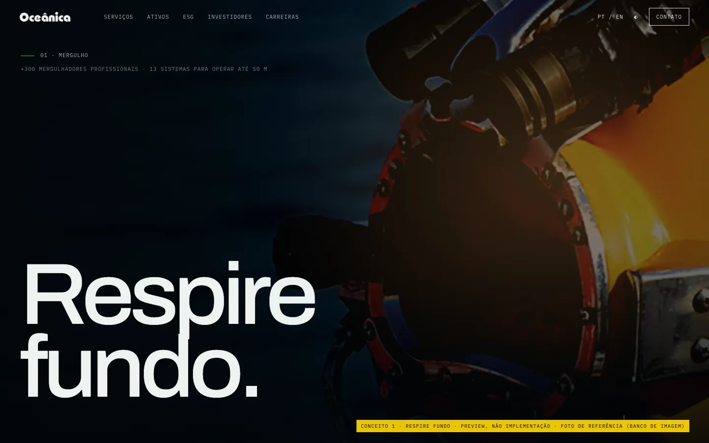
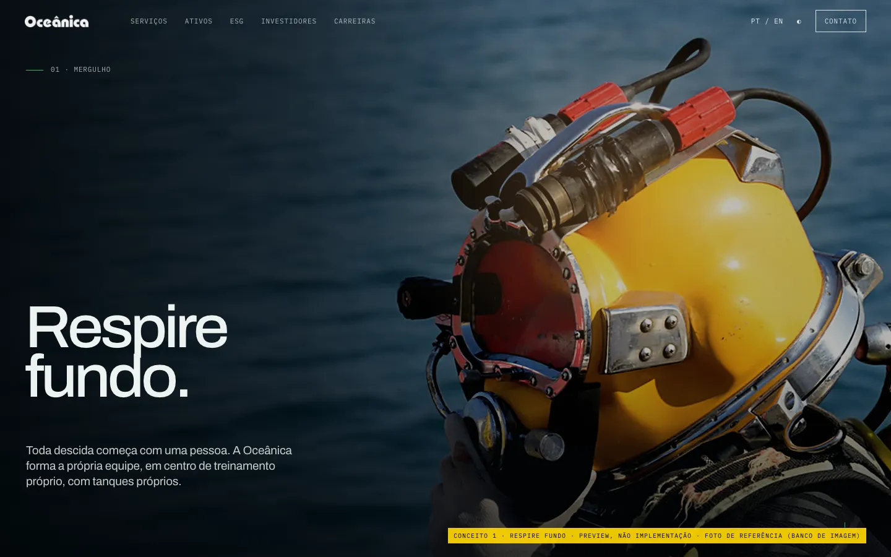
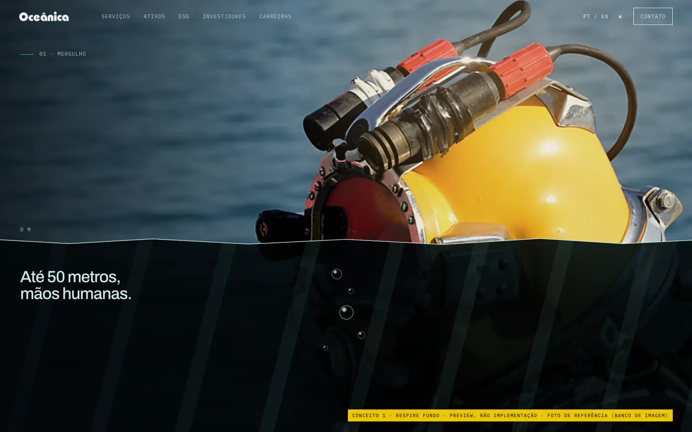
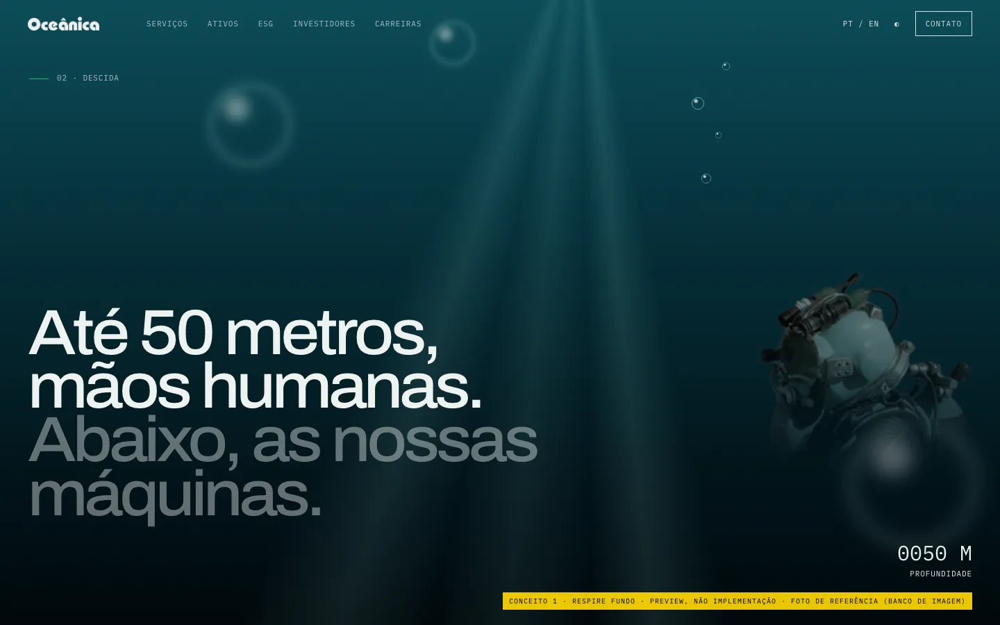
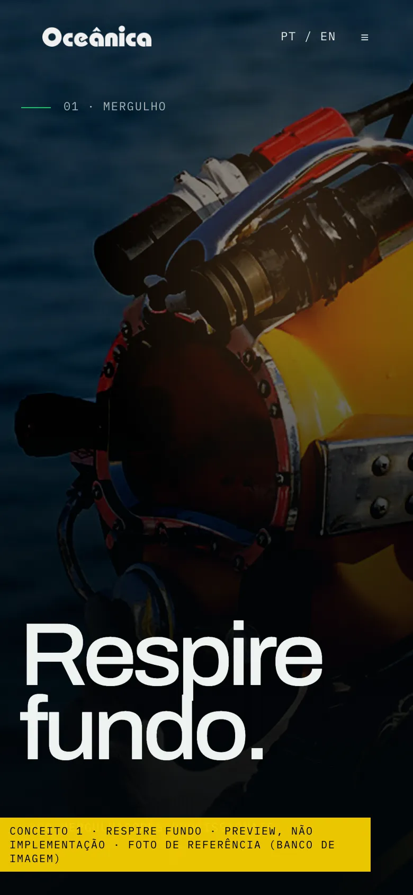
Conceito 02 Recomendado
EN · Our hands at three thousand metres.
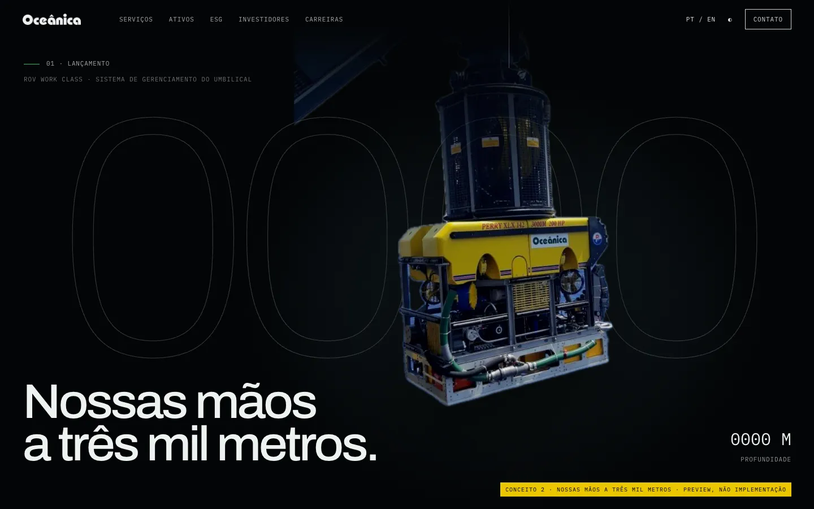
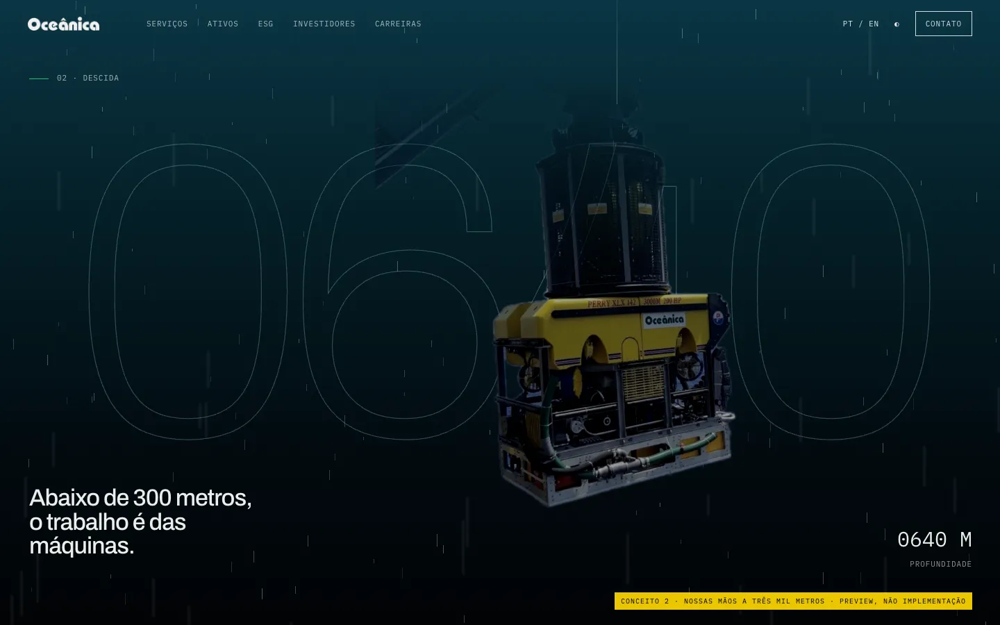
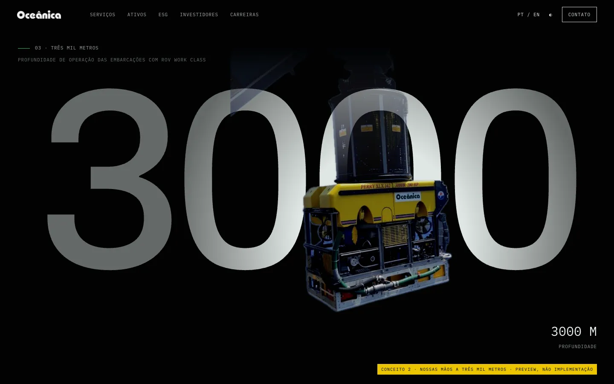
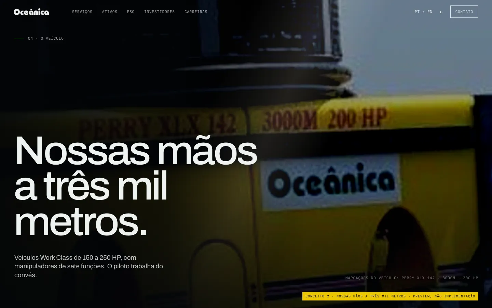
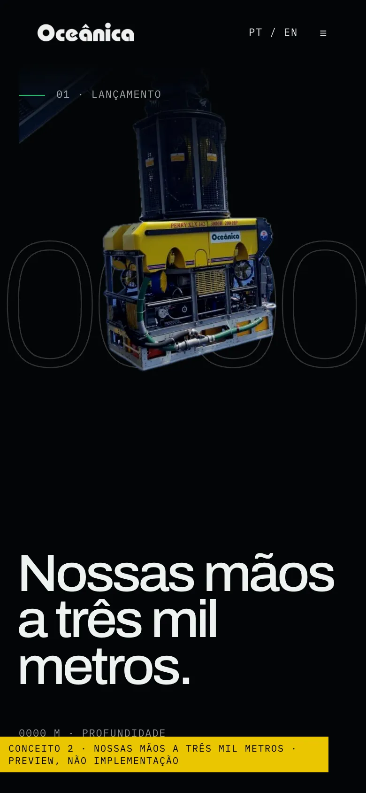
Conceito 03
EN · Everything down there starts up here.
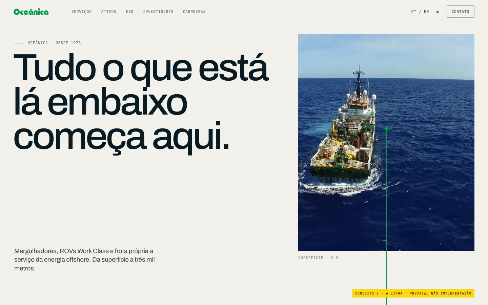
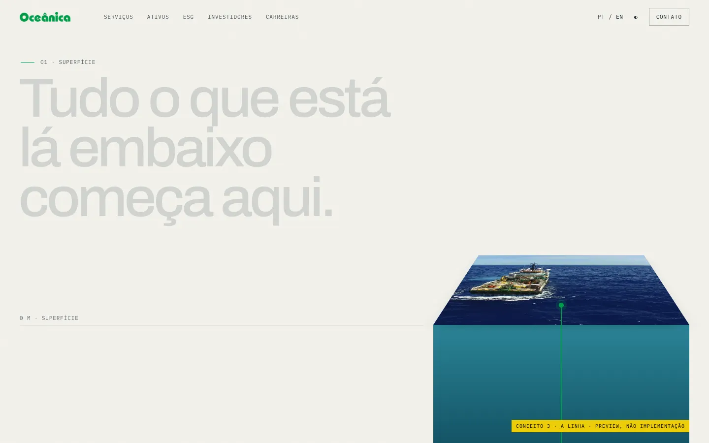
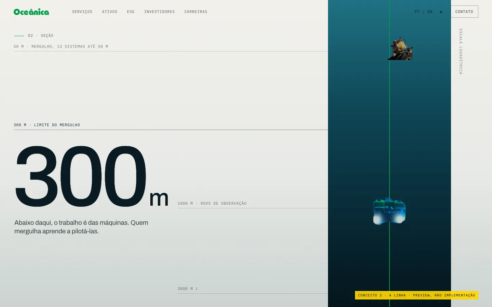
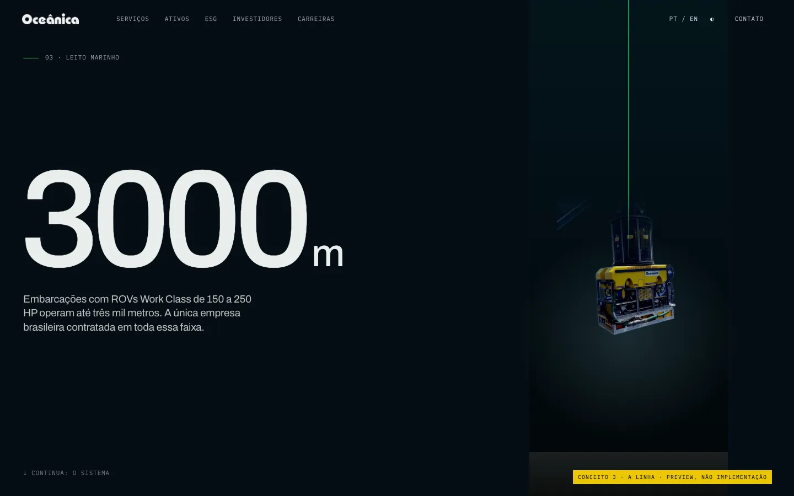
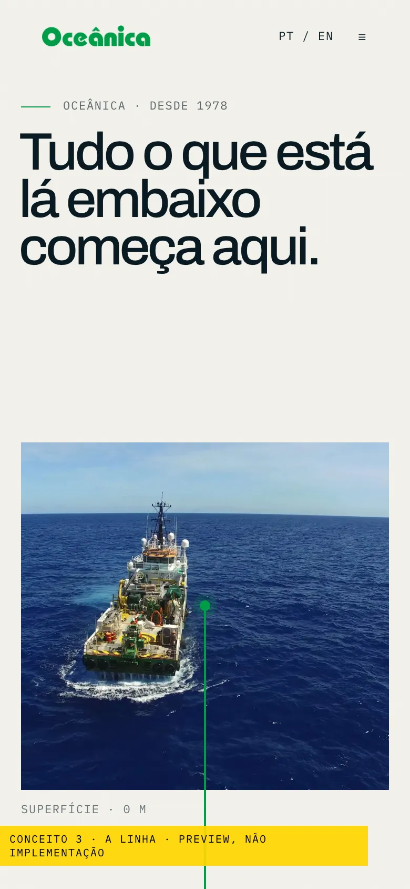
| 1 · Respire fundo | 2 · Nossas mãos | 3 · A linha | |
|---|---|---|---|
| Sujeito | Mergulhador | ROV Work Class | Embarcação e a linha |
| Tema | Escuro, quente para frio | Preto | Papel para tinta |
| Emoção | Humana, física | Potência, precisão | Clareza, escala |
| Movimento | Recuo e descida contínuos | Câmera travada, o mundo desce | A página é a câmera |
| Pronto hoje | Não (foto de banco) | Sim | Sim |
| Produção ideal | Sessão com mergulhador, vídeo over/under | Fotos noturnas ou fotogrametria | Drone a pino |
| Peso técnico | Médio | Baixo | O menor |
É o único que chega a qualidade internacional com a mídia que já existe, põe a máquina da Oceânica, com a marca dela, no centro, e o título junta pessoa e máquina numa frase. O conceito 1 tem a emoção mais forte, mas depende de uma sessão com mergulhador real. O conceito 3 é a ideia mais original e serve melhor ao capítulo do sistema, onde um corte vertical do oceano é exatamente o que precisa ser explicado.
Estudo de conceito · não é o site oficial da Oceânica · fotos sem liberação · o mergulhador é foto de banco de imagem publicada no site atual